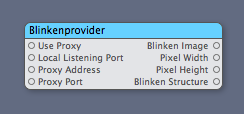
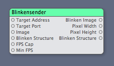
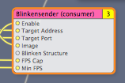
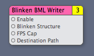

System Requirements
The Blinkenposer.plugin requires Mac OS X 10.5
Provided Patches
The Blinkenposer.plugin provides the following patches to be used in Quartz Composer:
Blinkenprovider
The Blinkenprovider patch can listen to blinkenproxies and provides an Image, the pixel dimensions and a structure representation of the received images.
| Input | Type | Example | Description |
|---|---|---|---|
| Use Address | Index | 0 | This index determines if the provider listens to the localhost on the given local listening port or to the given proxy address |
| Local Listening Port | Number | 2323 | The port to listen to locally. |
| Proxy Address | String | localhost | The host address of the blinkenproxy to listen to. |
| Proxy Port | Number | 4242 | The port of the blinkenproxy to listen to. |
| Output | Type | Example | Description |
|---|---|---|---|
| Blinken Image | Image | A Grayscale Image representation of what was received from the Blinkenproxy. | |
| Pixel Width | Number | 96 | The width of the received Image. |
| Pixel Height | Number | 32 | The Height of the received Image. |
| Blinken Structure | Array of Arrays | {{15,0},{0,15}} | The received Data as a Structure that can be iterated through. This structure has values from 0 (black) to 15 (white). To see that in use you can look into the FlatStereoscopeToronto.qtz Composition. |
| Screen Metadata | Array of Dictioanries | {{"screenID"=>0,"width"=>96,"height"=>12} | Metadata about the different screens all added as into the one image side by side if the new format is used |
Blinkensender
The Blinkensender patch can send images or structures to a blinkenproxy.
| Input | Type | Example | Description |
|---|---|---|---|
| Target Address | String | localhost | The address of the blinkenproxy / blinkensim / bmix to Target. |
| Target Port | Number | 2323 | The port to target. |
| Image | Image | A Grayscale Image representation of what should be sent to the Blinkenproxy. The Data will be boiled down to 16 grayscale values. | |
| Blinken tructure | Array of Arrays | {{15,0},{0,15}} | A Blinken Structure to send out. If both Image and Structure are attached to this patch, the Image is taken. To see how that can be created using a javascript patch, have a look into the BasicTest.qtz Composition. |
| FPS Cap | Number | 15 | The max number of frames per second to send out. Please make sure this stays below thirty, because the installation can't display more FPS anyways. |
| Min FPS | Number | 1 | The min number of frames per second to send out Important for when the input image doesn't change. |
| Output | Type | Example | Description |
|---|---|---|---|
| Blinken Image | Image | A Grayscale Image representation of what was sent to the Blinkenproxy. | |
| Pixel Width | Number | 96 | The width of the received Image. |
| Pixel Height | Number | 32 | The Height of the received Image. |
| Blinkenstructure | Array of Arrays | {{15,0},{0,15}} | The sent Data as a Structure that can be iterated through. This structure has values from 0 (black) to 15 (white). To see that in use you can look into the FlatStereoscopeToronto.qtz Composition. |
BlinkenBMLWriter
The Blinkensender patch can send images or structures to a blinkenproxy.
| Input | Type | Example | Description |
|---|---|---|---|
| Enabled | BOOL | True | If this patch is enabled it records to a file in the Destination path. E.g. turning record on and off enables and disables the recording. |
| Blinken tructure | Array of Arrays | {{15,0},{0,15}} | A Blinken Structure to record. |
| FPS Cap | Number | 15 | The max number of frames per second to record at max. The BMLWriter already coalesces updates that don't change into one frame, so this can be high if the source is already capped |
| Destination Path | String | ~/Desktop | The destination directory where the recorded files should be stored. Files are of the form YYYY-MM-DD_HH-MM_SS.bml |